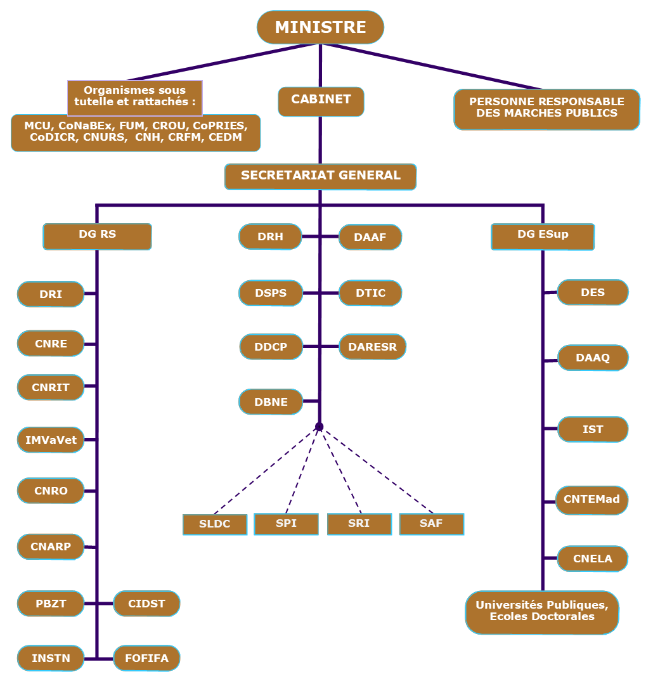

ORGANIGRAMME SUIVANT DECRET N°2019-073 du 06 fevrier 2019
LES ATTRIBUTIONS DU MINISTERE
DÉCRET N°2019-073
Dans le cadre de la politique générale de l'Etat et la réalisation des objectifs stratégiques énoncés dans l'Initiative Émergence Madagascar (I.E.M.), le Ministère de l'Enseignement Supérieur et de la Recherche Scientifique met en oeuvre la Politique Générale de l'Etat en matière d'enseignement supérieur et de recherche. Il est notamment chargé de : Faire de l'enseignement supérieur et de la recherche scientifique un réel moteur de développement de Madagascar ; Assurer l'amélioration, l'efficacité de la gouvernance des Universités et garantir la paix sociale dans le monde Universitaire ; Instaurer d'une manière pérenne un enseignement supérieur de qualité et compétitif, par l'optimisation et la propagation de l'application du système LMD, du système d'accréditation, et d'assurance qualité ; De promouvoir des formations professionnalisantes, au sein des facultés, écoles, instituts, et divers sites à hautes potentialités économiques ; D'assurer un meilleur environnement pour les études, les formations et les recherches ; Prioriser les thématiques de recherches et de l'innovation ; Valoriser les produits de la recherche scientifique par la création d'une stratégie entrepreneuriale (Promotion de l'Economie), afin de réaliser à son meilleur niveau l'exploitation des produits issus de cette recherche ; Systématiser cette option d'investissements pour les résultats de recherche afin qu'elle devienne une réelle source régénératrice de ressources financières ; De coordonner et de contrôler les activités des organismes et institutions qui lui sont rattachés. Mise en ligne du 6 juin 2019
Pour plus d'information, veuillez contacter:
Ministère de l’Enseignement Supérieur et de la Recherche Scientifique (MESupReS)
Fiadanana Tsimbazaza - BP. 4163 - Antananarivo 101 - Madagascar
Courriel :mesupres@mesupres.edu.mg
© MESupReS 2009 - 2019
Ⓟ Secrétariat Général | Direction des Techniques de l’Information et de la Communication (D.T.I.C.)
Tous droits réservés